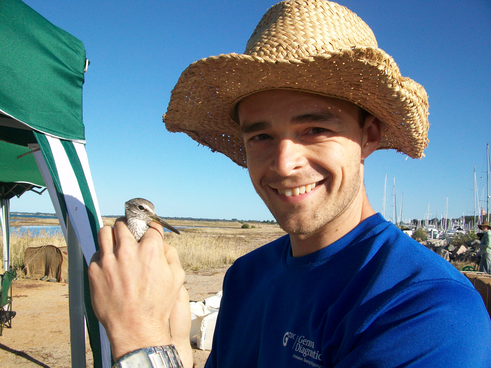
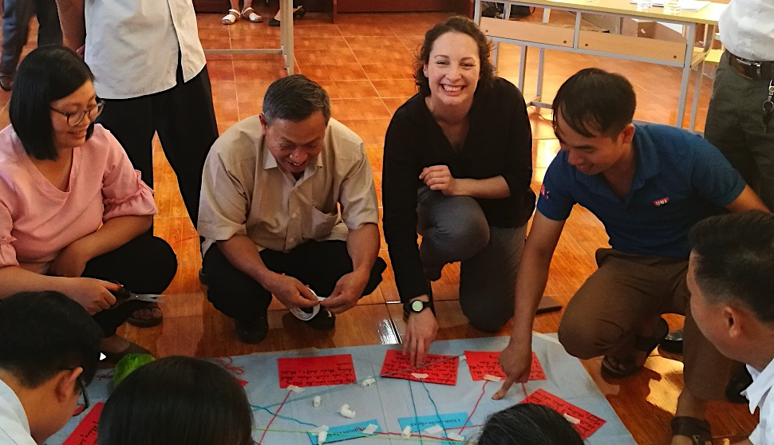
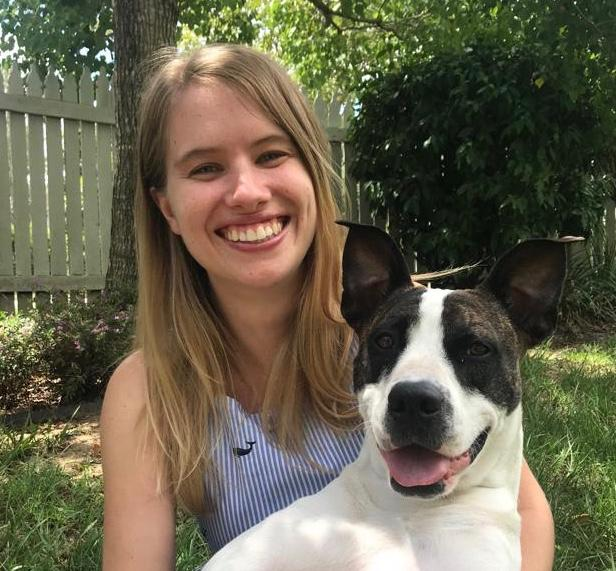

Members of our team a wealth of expertise owing to their diverse backgrounds in veterinary science, ecology, spatial epidemiology and mathematical modelling. We apply spatial epidemiology and risk mapping approaches for projects at interface between animal and human public health to develop a broader understanding of what mechanisms influence the geographical distributions of animal and human infections.
Ricardo Soares Magalhães
A/Prof Soares Magalhães recent publications
| Year | Title | Journal | Authors |
|---|---|---|---|
| 2019 | The Impact of Expanded Brucellosis Surveillance in Beef Cattle on Human Brucellosis in Korea: An Interrupted Time-Series Analysis | Bmc Infectious Diseases | S Ryu, RJS Magalhães, BC Chun |
| 2019 | Comparison of Influenza Disease Burden in Older Populations of Hong Kong and Brisbane: The Impact of Influenza and Pneumococcal Vaccination | Bmc Infectious Diseases | L Yang, KP Chan, CM Wong, et al |
| 2019 | Hiv Prevalence among Tuberculosis Patients in Sub-Saharan Africa: a Systematic Review and Meta-Analysis | Aids and Behavior | YA Gelaw, G Williams, RJS Magalhães, et al |
| 2019 | Determinants of Spatial Heterogeneity of Functional Illiteracy among School-Aged Children in the Philippines: An Ecological Study | Int J of Environmental Research and Public Health | K Owada, M Nielsen, C Lau, et al |
| 2019 | Modeling Schistosoma Japonicum Infection under Pure Specification Bias: Impact of Environmental Drivers of Infection | Int J of Environmental Research and Public Health | AL Araujo Navas, F Osei, LR Leonardo, et al |
| 2018 | Airborne Geographical Dispersal of q Fever from Livestock Holdings to Human Communities: a Systematic Review and Critical Appraisal of Evidence | Bmc Infectious Diseases | NJ Clark, RJS Magalhães |
| 2018 | Epidemiological Shift and Geographical Heterogeneity in the Burden of Leptospirosis in China | Infectious Diseases of Poverty | PW Dhewantara, AA Mamun, WY Zhang, et al |
| 2018 | Effectiveness of Market-Level Biosecurity at Reducing Exposure of Poultry and Humans to Avian Influenza: a Systematic Review and Meta-Analysis | The J of Infectious Diseases | X Zhou, Y Wang, H Liu, et al |
| 2018 | Spatiotemporal Patterns and Environmental Drivers of Human Echinococcoses over a Twenty-Year Period in Ningxia Hui Autonomous Region, China | Parasites & Vectors | AMC Restrepo, YR Yang, DP McManus, et al |
| 2018 | Spatiotemporal Patterns and Environmental Drivers of Human Echinococcoses over a Twenty-Year Period in Ningxia Hui Autonomous Region, China | Parasites and Vectors | AM Cadavid Restrepo, YR Yang, DP McManus, et al |
| 2018 | a Systematic Literature Review and Critical Appraisal of Epidemiological Studies on Outdoor Air Pollution and Tuberculosis Outcomes | Environmental Research | I Popovic, RJS Magalhaes, E Ge, et al |
| 2018 | Labrador Retrievers under Primary Veterinary Care in the Uk: Demography, Mortality and Disorders | Canine Genetics and Epidemiology | PD McGreevy, BJ Wilson, CS Mansfield, et al |
| 2018 | Spatial Distribution and Populations at Risk of A. Lumbricoides and T. Trichiura Co-Infections and Infection Intensity Classes: An Ecological Study | Parasites & Vectors | K Owada, CL Lau, L Leonardo, et al |
| 2018 | Modelling Local Areas of Exposure to Schistosoma Japonicum in a Limited Survey Data Environment | Parasites & Vectors | ALA Navas, RJS Magalhães, F Osei, et al |
| 2018 | The Extensive Networks of Frequent Population Mobility in the Samoan Islands and their Implications for Infectious Disease Transmission | Scientific Reports | Z Xu, CL Lau, X Zhou, et al |
| 2018 | The Role of Neonatal Pulmonary Morbidity in the Longitudinal Patterns of Hospitalisation for Respiratory Infection During the First Year of Life | Epidemiology & Infection | KS Betts, RJS Magalhães, R Alati |
| 2018 | Chronic Helminth Infection Perturbs the Gut-Brain Axis, Promotes Neuropathology and Alters Behaviour | The J of Infectious Diseases, Jiy | PR Giacomin, AK Kraeuter, EA Albornoz, et al |
| 2018 | Spatial Epidemiological Approaches to Inform Leptospirosis Surveillance and Control: a Systematic Review and Critical Appraisal of Methods | Zoonoses and Public Health | PW Dhewantara, CL Lau, KJ Allan, et al |
| 2018 | Risk Factors for Recurrence of Fmd Outbreaks in Iran: a Case-Control Study in a Highly Endemic Area | Bmc Veterinary Research | K Ilbeigi, S Bokaie, S Aghasharif, et al |
| 2018 | Environmental Risk Factors and Changing Spatial Patterns of Human Seropositivity for Echinococcus Spp. in Xiji County, Ningxia Hui Autonomous Region, China | Parasites & Vectors | AMC Restrepo, YR Yang, DP McManus, et al |
| 2018 | Geographical and Temporal Distribution of the Residual Clusters of Human Leptospirosis in China, 2005–2016 | Scientific Reports | PW Dhewantara, A Al Mamun, WY Zhang, et al |
| 2018 | Characteristics of Livestock Husbandry and Management Practice in the Central Dry Zone of Myanmar | Tropical Animal Health and Production | TTZ Win, A Campbell, RJS Magalhães, et al |
| 2018 | Epidemiology of Pseudorabies in Intensive Pig Farms in Shanghai, China: Herd-Level Prevalence and Risk Factors | Preventive Veterinary Medicine | L Xia, Q Sun, J Wang, et al |
| 2018 | Spatial Prediction of the Risk of Exposure to Echinococcus Spp. among Schoolchildren and Dogs in Ningxia Hui Autonomous Region, People’s Republic of China | Geospatial Health | AMC Restrepo, YR Yang, DP McManus, et al |
| 2018 | Spatiotemporal Heterogeneity of Malnutrition Indicators in Children under 5 Years of Age in Bangladesh, 1999–2011 | Public Health Nutrition | MT Hasan, AA Mamun, GM Williams, et al |
| 2017 | Gut Microbiota Disturbance During Helminth Infection: can it Affect Cognition and Behaviour of Children? | Bmc Infectious Diseases | V Guernier, B Brennan, L Yakob, et al |
| 2017 | Countrywide Reassessment of Schistosoma Mansoni Infection in Burundi using a Urine-Circulating Cathodic Antigen Rapid Test: Informing the National Control Program | American J of Tropical Medicine and Hygiene | G Ortu, O Ndayishimiye, M Clements, et al |
| 2017 | Land Cover Change During a Period of Extensive Landscape Restoration in Ningxia Hui Autonomous Region, China | Science of the Total Environment | AMC Restrepo, YR Yang, NAS Hamm, et al |
| 2017 | Measuring the Effect of Soil-Transmitted Helminth Infections on Cognitive Function in Children: Systematic Review and Critical Appraisal of Evidence | Advances in Parasitology | K Owada, M Nielsen, CL Lau, et al |
| 2017 | Vetcompass Australia: a National Big Data Collection System for Veterinary Science | Animals | P McGreevy, P Thomson, NK Dhand, et al |
| 2017 | Assessing the Social and Environmental Determinants of Pertussis Epidemics in Queensland, Australia: a Bayesian Spatio-Temporal Analysis | Epidemiology & Infection | X Huang, S Lambert, C Lau, et al |
| 2017 | Molecular Epidemiology and Pathology of Spirorchiid Infection in Green Sea Turtles (Chelonia Mydas) | Int J for Parasitology: Parasites and Wildlife | PA Chapman, H Owen, M Flint, et al |
| 2017 | Spatiotemporal Distribution and Population at Risk of Soil-Transmitted Helminth Infections Following an Eight-Year School-Based Deworming Programme in Burundi, 2007–2014 | Parasites & Vectors | M Assoum, G Ortu, MG Basáñez, et al |
| 2017 | Factors Influencing the Success of Aerial Rabies Vaccination of Foxes | Scientific Reports | J Henning, E Giorgi, RJS Magalhães, et al |
| 2017 | Economic Cost Estimation of Selected Strategies to Control Soil Transmitted Helminth Infections in the Philippines | Philippine J of Health Research and Development | FB Garcia Jr, K Halton, N Graves, et al |
Postdoctoral Fellows
Nicholas Clark

Dr Clark's recent publications
| Year | Title | Journal | Authors |
|---|---|---|---|
| 2019 | Climate Variation Influences Host Specificity in Avian Malaria Parasites | Ecology Letters | A Fecchio, K Wells, JA Bell, et al |
| 2019 | Global Patterns in Helminth Host Specificity: Phylogenetic and Functional Diversity of Regional Host Species Pools Matter | Ecography | K Wells, DI Gibson, NJ Clark |
| 2019 | Out-of-Africa, Human-Mediated Dispersal of the Common Cat Flea, Ctenocephalides Felis: The Hitchhiker’s Guide to World Domination | Int J for Parasitology | AL Lawrence, CE Webb, NJ Clark, et al |
| 2019 | Microbial Associations and Spatial Proximity Predict North American Moose (Alces Alces) Gastrointestinal Community Composition | Biorxiv | NM Fountain-Jones, N Clark, A Kinsley, et al |
| 2018 | Parasite Spread at the Domestic Animal-Wildlife Interface: Anthropogenic Habitat Use, Phylogeny and Body Mass Drive Risk of Cat and Dog Flea (Ctenocephalides Spp.) Infestation … | Parasites & Vectors | NJ Clark, JM Seddon, J Šlapeta, et al |
| 2018 | Climate, Host Phylogeny and the Connectivity of Host Communities Govern Regional Parasite Assembly | Diversity and Distributions | NJ Clark, SM Clegg, K Sam, et al |
| 2018 | Phylogenetic Uniqueness, not Latitude, Explains the Diversity of Avian Blood Parasite Communities Worldwide | Global Ecology and Biogeography | NJ Clark |
| 2018 | Global Spread of Helminth Parasites at the Human–domestic Animal–wildlife Interface | Global Change Biology | K Wells, DI Gibson, NJ Clark, et al |
| 2018 | Airborne Geographical Dispersal of q Fever from Livestock Holdings to Human Communities: a Systematic Review and Critical Appraisal of Evidence | Bmc Infectious Diseases | NJ Clark, RJS Magalhães |
| 2018 | Mrfcov: Markov Random Fields with Additional Covariates | r Package Version | NJ Clark, K Wells, O Lindberg |
| 2018 | Unravelling Changing Interspecific Interactions Across Environmental Gradients using Markov Random Fields | Ecology | NJ Clark, K Wells, O Lindberg |
| 2018 | Emergence of Canine Parvovirus Subtype 2b (Cpv-2b) Infections in Australian Dogs | Infection, Genetics and Evolution | NJ Clark, JM Seddon, M Kyaw-Tanner, et al |
| 2017 | Integrating Phylogenetic and Ecological Distances Reveals New Insights into Parasite Host Specificity | Molecular Ecology | NJ Clark, SM Clegg |
| 2017 | a New Look at the Origins of Gibbon Ape Leukemia Virus | Virus Genes | J McKee, N Clark, F Shapter, et al |
Javier Cortes Ramirez
PhD Students
Pandji Dhewantara

Pandji's recent publications
| Year | Title | Journal | Authors |
|---|---|---|---|
| 2019 | Individual and Contextual Factors Predicting Self-Reported Malaria among Adults in Eastern Indonesia: Findings from Indonesian Community-Based Survey | Malaria J | PW Dhewantara, M Ipa, M Widawati |
| 2019 | Spatial Epidemiological Approaches to Inform Leptospirosis Surveillance and Control: a Systematic Review and Critical Appraisal of Methods | Zoonoses and Public Health | PW Dhewantara, CL Lau, KJ Allan, et al |
| 2018 | Epidemiological Shift and Geographical Heterogeneity in the Burden of Leptospirosis in China | Infectious Diseases of Poverty | PW Dhewantara, AA Mamun, WY Zhang, et al |
| 2018 | Geographical and Temporal Distribution of the Residual Clusters of Human Leptospirosis in China, 2005–2016 | Scientific Reports | PW Dhewantara, A Al Mamun, WY Zhang, et al |
| 2017 | The Changing Epidemiology of Leptospirosis in Mainland China and Its Impact on Annual Disease Burden Estimates | American J of Tropical Medicine and Hygiene | PW Dhewantara, AA Mamun, WY Zhang, et al |
| 2017 | The Distribution of Culex Spp (Diptera: Culicidae) in Selected Endemic Lymphatic Filariasis Villages in Bandung District West Java Indonesia | Aspirator-Jurnal Penelitian Penyakit Tular Vektor (J of Vector-Borne … | EP Astuti, M Ipa, T Wahono, et al |
| 2016 | Kapasitas Vektor Dan Laju Inokulasi Entomologis Anopheles Vagus Dari Wilayah Endemis Malaria Di Provinsi Banten | Jurnal Penyakit Tidak Menular Indonesia | EP Astuti, M Ipa, H Prasetyowati, et al |
Tarni Cooper

Tarni's recent publications
| Year | Title | Journal | Authors |
|---|---|---|---|
| 2017 | Engaging Rural Australian Communities in National Science Week Helps Increase Visibility for Women Researchers | Royal Society Open Science | MC Hardy, MR Desselle, 2016 Catch a Rising Star Consortium |
| 2017 | Inclusive Rural Communication Services: Building Evidence, Informing Policy | Food and Agricultural Organisation of the United Nations | E van de Fliert, T Cooper, S Sam, et al |
| 2016 | Towards Better-Informed Consent: Research with Livestock-Keepers and Informal Traders in East Africa | Preventive Veterinary Medicine | TL Cooper, Y Kirino, S Alonso, et al |
| 2016 | One Health Ethics: The Need for Policy Before Research and Action | The | TL Cooper, Y Kirino, S Alonso, et al |
Hester Rynhoud

Yalemzewod Assefa Gelaw (Yalem)
Yalem's recent publications
| Year | Title | Journal | Authors |
|---|---|---|---|
| 2019 | Community Health Extension Program of Ethiopia, 2003–2018: Successes and Challenges Toward Universal Coverage for Primary Healthcare Services | Globalization and Health | Y Assefa, YA Gelaw, PS Hill, et al |
| 2019 | Willingness to Pay for Community-Based Health Insurance and Associated Factors among Rural Households of Bugna District, Northeast Ethiopia | Bmc Research Notes | YAG Amare Minyihun, Measho Gebreslassie Gebregziabher |
| 2019 | Spatial Clustering and Socio-Demographic Determinants of Hiv Infection in Ethiopia, 2015-2017 | Int J of Infectious Diseases | YA Gelaw, RJS Magalhães, Y Assefa, et al |
| 2019 | Hiv Prevalence among Tuberculosis Patients in Sub-Saharan Africa: a Systematic Review and Meta-Analysis | Aids and Behavior | YA Gelaw, G Williams, RJS Magalhães, et al |
| 2019 | Factors Associated with Overweight and Obesity among Adults in Northeast Ethiopia: a Cross-Sectional Study | Diabetes, Metabolic Syndrome and Obesity: Targets and Therapy | S Dagne, YA Gelaw, Z Abebe, et al |
| 2018 | Measuring Performance on the Healthcare Access and Quality Index for 195 Countries and Territories and Selected Subnational Locations: a Systematic Analysis from the Global … | The Lancet | N Fullman, J Yearwood, SM Abay, et al |
| 2018 | Population and Fertility by Age and Sex for 195 Countries and Territories, 1950–2017: a Systematic Analysis for the Global Burden of Disease Study 2017 | The Lancet | CJL Murray, CSKH Callender, XR Kulikoff, et al |
| 2018 | Incidence and Risk Factors of First-Line Antiretroviral Treatment Failure among Human Immunodeficiency Virus-Infected Children in Amhara Regional State, Ethiopia: A … | Bmj Open | MM Sisay, TA Ayele, YA Gelaw, et al |
| 2018 | The Role of Smoking in the Relationship Between Intimate Partner Violence and Age at Natural Menopause: a Mediation Analysis | Women’s Midlife Health | DL Gita Devi Mishra, Hsin-Fang Chung, Yalemzewod Assefa Gelaw |
| 2018 | 3-Month Daily Rifampicin and Isoniazid Compared to 6-or 9-Month Isoniazid for Treating Latent Tuberculosis Infection in Children and Adolescents less than 15 Years of Age: An … | European Respiratory J | Y Assefa, Y Assefa, S Woldeyohannes, et al |
| 2018 | Mothers’ Health Service Utilization and Attitude Were the Main Predictors of Incomplete Childhood Vaccination in East-Central Ethiopia: a Case-Control Study | Archives of Public Health | MK Yenit, YA Gelaw, AM Shiferaw |
| 2018 | Factors Affectinsg the Utilization of Xpert Mtb/Rif Assay among Tb Clinic Health Workers in Addis Ababa | J of Clinical Tuberculosis and Other Mycobacterial Diseases | M Agonafir, Y Assefa, F Girmachew, et al |
| 2017 | Exclusive Breastfeeding and Mothers’ Employment Status in Gondar Town, Northwest Ethiopia: a Comparative Cross-Sectional Study | Int Breastfeeding J | DA Chekol, GA Biks, YA Gelaw, et al |
| 2017 | Maternal Health Care Service Seeking Behaviors and Associated Factors among Women in Rural Haramaya District, Eastern Ethiopia a Triangulated Community-Based Cross-Sectional Study | Reproductive Health | YAGYAM Dereje Kifle, Telake Azale |
| 2017 | The Prevalence of Impaired Fasting Glucose and Undiagnosed Diabetes Mellitus and Associated Risk Factors among Adults Living in a Rural Koladiba Town, Northwest Ethiopia | Bmc Research Notes | A Worede, S Alemu, YA Gelaw, et al |
| 2017 | Factors Associated with Utilization of Long-Acting and Permanent Contraceptive Methods among Women Who Have Decided not to Have more Children in Gondar City | Bmc Women’s Health | CB Zenebe, M Adefris, MK Yenit, et al |
| 2017 | Determinants to Antiretroviral Treatment Non-Adherence among Adult Hiv/Aids Patients in Northern Ethiopia | Aids Research and Therapy | MAYAG Berhe Beyene Gebrezgabher, Yigzaw Kebede, Melaku Kindie, et al |
| 2017 | Pertussis Outbreak Investigation of Mekdela District, South Wollo Zone, Amhara Region, North-West Ethiopia | Bmc Research Notes | SD Alamaw, AW Kassa, YA Gelaw |
| 2017 | Spatial Patterns of Childhood Diarrhea in Ethiopia: Data from Ethiopian Demographic and Health Surveys (2000, 2005, and 2011) | Bmc Infectious Disease | DTDYAG Getahun Gebre BogaleEmail author, Kassahun Alemu Gelaye |
| 2017 | Prevalence and Associated Factors of Khat Use among University Students in the University of Gondar, Northwest Ethiopia | J of Substance Use | WG Adane, GA Alemie, SM W/yhonnes, et al |
| 2017 | The Effect of Climate and Altitude Variability on Tuberculosis: a Systematic Review | Environmental Health Perspectives | Y Gelaw, W Yu, S Magalhães, et al |
Tuhin Biswas
Tuhin's recent publications
| Year | Title | Journal | Authors |
|---|---|---|---|
| 2019 | Association Between Socioeconomic Status and Prevalence of Non-Communicable Diseases Risk Factors and Comorbidities in Bangladesh: Findings from a Nationwide Cross-Sectional Survey | Bmj Open | T Biswas, N Townsend, MS Islam, et al |
| 2019 | Undiagnosed Isolated Systolic and Diastolic Hypertension Subtypes and their Correlates in Bangladesh: a Nationwide Survey | Osong Public Health and Research Perspectives | S Ahmed, S Pervin, T Biswas, et al |
| 2019 | Prevalence and Sociodemographic Determinants of Household-Level Double Burden of Malnutrition in Bangladesh | Public Health Nutrition | S Das, SM Fahim, MS Islam, et al |
| 2018 | Global, Regional, and National Age-Sex-Specific Mortality for 282 Causes of Death in 195 Countries and Territories, 1980–2017: a Systematic Analysis for the Global Burden Of … | The Lancet | GA Roth, D Abate, KH Abate, et al |
| 2018 | Global, Regional, and National Comparative Risk Assessment of 84 Behavioural, Environmental and Occupational, and Metabolic Risks or Clusters of Risks for 195 Countries And … | The Lancet | JD Stanaway, A Afshin, E Gakidou, et al |
| 2018 | Global, Regional, and National Age-Sex-Specific Mortality and Life Expectancy, 1950–2017: a Systematic Analysis for the Global Burden of Disease Study 2017 | The Lancet | D Dicker, G Nguyen, D Abate, et al |
| 2018 | Measuring Progress from 1990 to 2017 and Projecting Attainment to 2030 of the Health-Related Sustainable Development Goals for 195 Countries and Territories: a Systematic … | The Lancet | R Lozano, N Fullman, D Abate, et al |
| 2018 | Population and Fertility by Age and Sex for 195 Countries and Territories, 1950–2017: a Systematic Analysis for the Global Burden of Disease Study 2017 | The Lancet | CJL Murray, CSKH Callender, XR Kulikoff, et al |
| 2018 | Ethnic Predisposition of Diabetes Mellitus in the Patients with Previous History of Gestational Diabetes Mellitus: a Review | Expert Review of Endocrinology & Metabolism | R Das Gupta, S Gupta, A Das, et al |
| 2018 | Influence of Organic Manures on the Growth of Diabetes Preventive Medicinal Plant Gynura, Gynura Procumbens | J of Biodiversity Conservation and Bioresource Management | MOS Akon, DK Datta, T Biswas, et al |
| 2018 | Assessing the Readiness of Health Facilities for Diabetes and Cardiovascular Services in Bangladesh: a Cross-Sectional Survey | Bmj Open | T Biswas, MM Haider, RD Gupta, et al |
| 2018 | Current Progress and Future Directions in the Double Burden of Malnutrition among Women in South and Southeast Asian Countries | Saimul and Hasan, Md. Mehedi and Mamun, Abdullah, Current Progress And … | T Biswas, N Townsend, RJ Magalhaes, et al |
| 2017 | The Prevalence of Underweight, Overweight and Obesity in Bangladeshi Adults: Data from a National Survey | Plos One | T Biswas, SP Garnett, S Pervin, et al |
| 2017 | Patients’ Perspective of Disease and Medication Adherence for Type 2 Diabetes in an Urban Area in Bangladesh: a Qualitative Study | Bmc Research Notes | SMS Islam, T Biswas, FA Bhuiyan, et al |
| 2017 | Overweight and Obesity among Children and Adolescents in Bangladesh: a Systematic Review and Meta-Analysis | Public Health | T Biswas, A Islam, MS Islam, et al |
| 2017 | Bangladesh Policy on Prevention and Control of Non-Communicable Diseases: a Policy Analysis | Bmc Public Health | T Biswas, S Pervin, MIA Tanim, et al |
| 2017 | Increasing Prevalence of Overweight and Obesity in Bangladeshi Women of Reproductive Age: Findings from 2004 to 2014 | Plos One | T Biswas, MJ Uddin, A Al Mamun, et al |
| 2017 | Non-Communicable Disease (Ncd) Risk Factors and Diabetes among Adults Living in Slum Areas of Dhaka, Bangladesh | Plos One | LB Rawal, T Biswas, NN Khandker, et al |
| 2017 | Socio-Demographic Characteristics and Tobacco Use among the Adults in Urban Slums of Dhaka, Bangladesh | Tobacco Induced Diseases | NN Khandker, T Biswas, ANS Khan, et al |
| 2017 | Impact of Mobile Phone-Based Technology to Improve Health, Population and Nutrition Services in Rural Bangladesh: a Study Protocol | Bmc Medical Informatics and Decision Making | J Uddin, T Biswas, G Adhikary, et al |
| 2017 | End Organ Damage in Hypertensive Geriatric Age Group: a Cross Sectional Study | J of Medical Research and Innovation | P Kyada, K Jadhav, TK Biswas, et al |
| 2017 | Evaluation of Risk Factors and End Organ Damage in Hypertensive Geriatric Age Group | J of Medical Research and Innovation | P Kyada, K Jadhav, TK Biswas, et al |
| 2017 | Age at Menarche and Its Socioeconomic Determinants among Female Students in an Urban Area in Bangladesh | Sexual & Reproductive Healthcare | MS Islam, MA Hussain, S Islam, et al |
| 2017 | Sexual & Reproductive Healthcare | MS Islam, MA Hussain, S Islam, et al |
Md. Mehedi Hasan
Shovon Chakma
Shovon's recent publications
| Year | Title | Journal | Authors |
|---|---|---|---|
| 2018 | Investigation of Animal Anthrax Outbreaks in the Human–animal Interface at Risky Districts of Bangladesh During 2016–2017 | J of Advanced Veterinary and Animal Research | SKS Islam, S Chakma, N Ibrahim, et al |
| 2017 | Livestock Associated Epidemiological Information Profiling in New Sandwip Island (Jahajerchar) of the Meghna Estuary, Noakhali using Participatory Disease Searching Tool | J of Advanced Veterinary and Animal Research | SKS Islam, S Chakma, AHMT Akhter, et al |
| 2016 | Isolation and Epidemiology of Multidrug Resistant Escherichia Coli from Goats in Cox s Bazar, Bangladesh | J of Advanced Veterinary and Animal Research | K Islam, A Ahad, M Barua, et al |
| 2016 | Isolation, Identification and Antimicrobial Resistance Profile of Staphylococcus Aureus in Cockroaches (Periplaneta Americana) | J of Advanced Veterinary and Animal Research | A Islam, AD Nath, K Islam, et al |
| 2016 | Leptospirosis in Bangladesh: An Urgent Need for Coordinated Surveillance System | Online J of Public Health Informatics | S Chakma, S Mahmood |
| 2016 | Social Network Analysis of Poultry Movement and Contact Patterns to Assess Transmission Potential of Exotic Subtypes of Avian Influenza in Poultry- Dense Districts of Bangladesh | Int Ecohealth One Health Congress | MWRM Shovon Chakma, Kamrul Islam, Muhammad Asaduzzaman, et al |
| 2015 | Isolation and Molecular Detection of Pasteurella Multocida Type a from Naturally Infected Chickens, and their Histopathological Evaluation in Artificially Infected Chickens In … | J of Advanced Veterinary and Animal Research | SN Panna, KHMNH Nazir, MB Rahman, et al |
| 2014 | Assessment of Bangladeshi Mothers’ Knowledge and Awareness on Childhood Tuberculosis: a Cross Sectional Study | Science J of Public Health | T Islam, S Chakma, MAR Bhuiyan, et al |
| 2010 | Rapid Detection of Infectious Laryngotracheitis Virus by Standardization of Polymerase Chain Reaction Targeting a Relatively Conserved Region of the Thymidine Kinase Gene | University J of Zoology, Rajshahi University | S Chakma, S Sarker, S Talukder, et al |